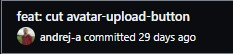
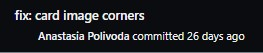
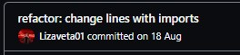

Техническая реализация
Особенности технической реализации и репозиторий проекта
Используемые технологии:
React
Достоинства
- Виртуальный DOM
- Повторное применение компонентов
- TypeScript XML (TSX) - это расширение синтаксиса TypeScript, которое позволяет использовать синтаксис, подобный HTML, для описания структуры интерфейса
React
Недостатки
- Мало опыта работы с ним,так что многие вещи приходилось понимать на ходу
- Typescript

- Styled Components

- Material UI

- Eslint

- Prettier

- React Router Dom

- Telegram

- Trello


- 
- 
- 